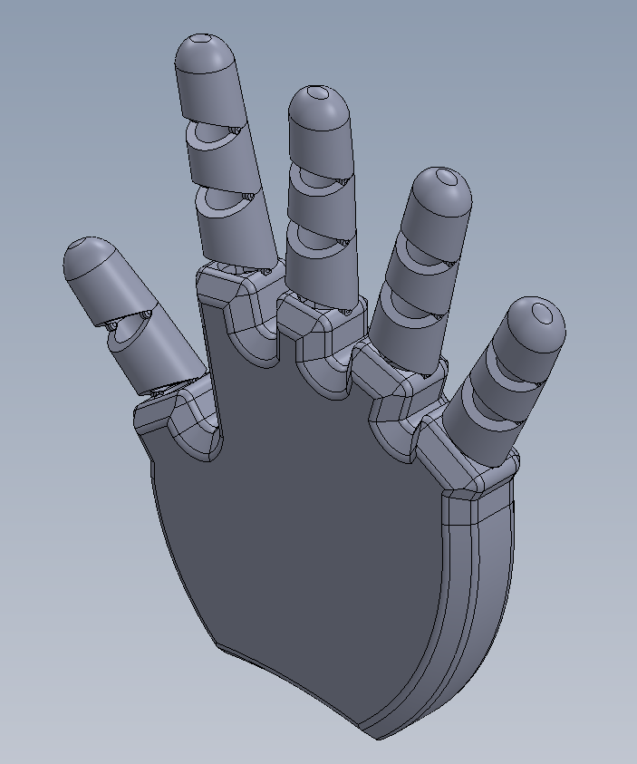
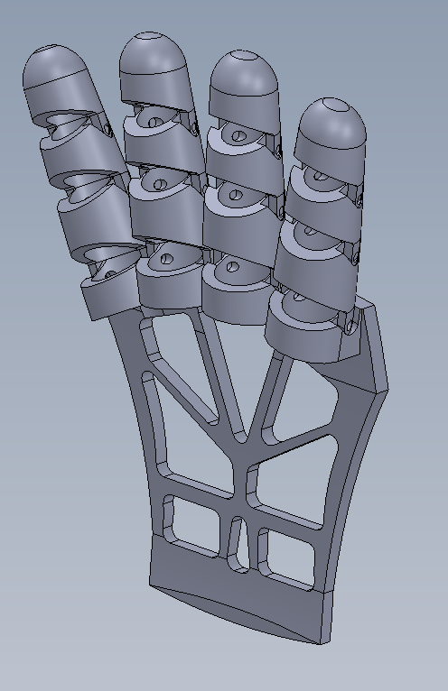
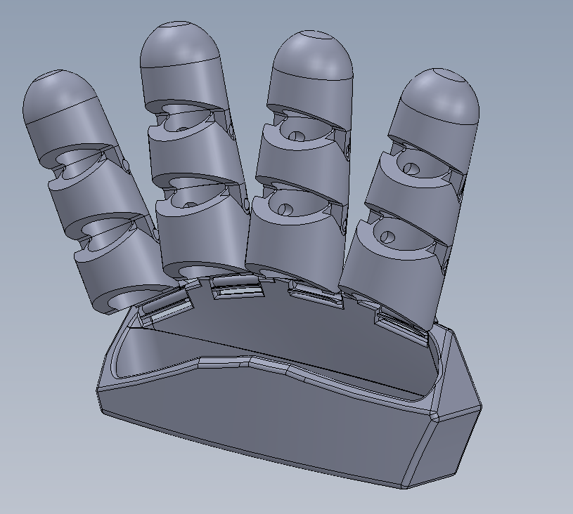

Mechanical Design · Biomedical Engineering · Prototyping
Exoskeleton Hand
Development of a wearable hand exoskeleton exploring mechanical design, rapid prototyping, manufacturability, and the engineering challenges involved in creating assistive technology.

Overview
This project focused on the mechanical design and iterative development of a wearable hand exoskeleton. The system was designed to support hand and finger motion through a lightweight mechanical structure that could be rapidly prototyped and refined.
My work involved CAD development, mechanical design, rapid prototyping, 3D printing, dimensional refinement, and evaluation of successive design iterations.
Tools & Methods: SolidWorks, CAD Modeling, 3D Printing, PLA, Rapid Prototyping, Mechanical Design
Problem
I developed this project as an opportunity to learn the engineering process behind taking an assistive product from early research and concept development toward a functional manufactured device.
Hand-assistive devices require engineers to consider more than whether a mechanism works in CAD. The design must account for human hand geometry, mechanical motion, structural requirements, manufacturability, material selection, and the practical needs of the person using the device.
My initial focus was therefore on developing and manufacturing the mechanical structure of the hand exoskeleton. The longer-term goal is to integrate motors and controls so that the device can actively assist individuals with weak or non-functional hands and help restore useful hand function.
Design Requirements
The design requirements were developed around the mechanical, anatomical, manufacturing, and future functional needs of the device.
- Hand Geometry: The design needed to accommodate the geometry and proportions of a human hand while maintaining appropriate clearances around the fingers and palm.
- Range of Motion: The mechanical structure needed to allow the fingers to move through useful ranges of motion without creating excessive interference or restricting natural movement.
- Mechanical Function: The structure needed to provide appropriate mechanical interfaces and degrees of freedom for future actuation and assistance of finger movement.
- Manufacturability: Components needed to be designed so they could be fabricated using available manufacturing methods, with particular consideration given to the limitations of 3D printing.
- Prototyping: The design needed to support rapid iteration so that geometry, fit, clearances, and mechanical interfaces could be evaluated and revised through successive prototypes.
- Material and Structural Considerations: The components needed to provide sufficient structural integrity while keeping the device practical for a wearable application.
- Future Actuation: The mechanical architecture needed to leave a path toward integrating motors and other components required for active hand assistance.
Design Process
I approached the project as an iterative product-development process rather than designing a final device in a single step. Each stage of development was used to identify new mechanical, geometric, or manufacturing considerations that informed the next design iteration.
1. Research & Concept Development
I began by researching hand anatomy, hand movement, and existing assistive and exoskeleton devices to understand the mechanical challenges involved in supporting finger motion. This research informed the overall architecture of the device and helped establish the mechanical features that would need to be considered during development.

2. CAD Development
I translated the initial concepts into 3D CAD models and began developing the palm, finger structures, joints, and mechanical interfaces. CAD allowed me to evaluate geometry, clearances, alignment, and mechanical relationships before committing to physical prototypes.
3. Rapid Prototyping
I used additive manufacturing to turn CAD designs into physical prototypes. Printing the components allowed me to evaluate the actual fit, assembly, mechanical interfaces, and manufacturability of the designs rather than relying solely on digital models.
4. Evaluation & Iteration
Each prototype was evaluated to identify problems with geometry, clearances, mechanical interfaces, and printability. These findings were incorporated into subsequent CAD revisions.


5. Design Refinement
The design evolved through multiple iterations as physical prototypes exposed issues that were not apparent in the original CAD models. Changes included modifications to joint and pin interfaces, palm and finger geometry, component positioning, and clearances.
6. Future Development
The current work establishes the mechanical foundation for future development. The next stage will involve integrating actuation, controls, and additional testing to evaluate the device's ability to provide active assistance during hand movement.
Engineering Decisions
Physical prototyping revealed several design limitations that were not apparent from the initial CAD models. I used these observations to guide subsequent design revisions rather than treating the first prototype as a final solution.
Joint & Hinge Mechanism
The original hinge mechanism was reevaluated as the design developed. The joint needed to provide controlled finger motion while remaining compact enough for a wearable device and manufacturable through additive manufacturing. The hinge design was therefore revised to improve the mechanical interface and support continued iteration.
Pin and Bore Geometry
The mechanical pin interface was revised as prototype testing revealed the limitations of the original geometry. The pin bore diameter was increased from approximately 2 mm to 4 mm, while the corresponding pin diameter was increased from approximately 1.8 mm to 3.75 mm.
This revision highlighted the importance of designing mechanical interfaces around the capabilities and tolerances of the manufacturing process rather than relying only on nominal CAD dimensions.
Palm Geometry & Clearance
The palm geometry was revised after identifying an issue with the relationship between the modeled internal and external dimensions. The resulting lack of clearance required the palm width to be reduced from approximately 140 mm to 134 mm.
This iteration reinforced the importance of clearly defining reference dimensions and verifying internal clearances when developing assemblies with multiple interacting components.
Finger Geometry
Finger component dimensions were also refined as the design progressed. Finger thickness was reduced by approximately 0.5 mm to improve the overall geometry while maintaining sufficient structural material.
Component Positioning
The position of the index-finger beam was adjusted to improve its relationship with the surrounding components. The pinky-finger structure also required additional consideration after a printing issue resulted in reduced material in the beam.
Design Tradeoffs
These iterations required balancing competing considerations: maintaining sufficient structural material, minimizing unnecessary size and weight, providing adequate clearances, and designing components that could be reliably manufactured and assembled.
Prototyping & Manufacturing
Additive manufacturing was used to rapidly convert CAD designs into physical prototypes. This allowed me to evaluate geometry, fit, assembly, and mechanical interfaces while keeping the development cycle short enough to support repeated design iterations.
Manufacturing Process
The components were manufactured using a Bambu Lab P1S 3D printer with PLA Basic filament. Components were prepared in the slicer with consideration given to print orientation, support requirements, and the geometry of individual features.
Print Parameters
- Printer: Bambu Lab P1S
- Material: PLA Basic
- Nozzle Temperature: 220 °C
- Bed Temperature: 55 °C
- Supports: Tree supports where required
- Orientation: Selected based on component geometry and printability
Manufacturing Considerations
Designing for additive manufacturing required consideration of feature size, support requirements, print orientation, clearances, and the limitations of the printing process. These considerations influenced the geometry of components and became increasingly important as the design moved from digital models to physical assemblies.
Manufacturing Feedback
Physical printing also revealed problems that were not immediately apparent in the CAD environment. For example, a printing issue affected the material available in the pinky-finger beam. This demonstrated the importance of evaluating not only whether a component can be modeled, but whether the intended geometry can be reliably produced using the selected manufacturing process.
Design for Iteration
Rapid prototyping allowed manufacturing feedback to be incorporated directly into subsequent CAD revisions. This created a continuous development loop in which digital design, physical manufacturing, evaluation, and redesign informed one another.
Testing & Results
Evaluation to this point has focused primarily on the mechanical development and manufacturability of the prototype. Physical prototypes were used to evaluate component fit, assembly, clearances, mechanical interfaces, and the ability to manufacture the intended geometry using additive manufacturing.
Prototype Evaluation
Comparing the printed components with the CAD models revealed several issues that were not apparent during digital development. These included insufficient clearances, dimensional relationships that required correction, and manufacturing-related issues with individual components.
Design Iterations
The results of these evaluations directly informed subsequent revisions. Changes to the palm geometry, finger dimensions, mechanical pin interfaces, and component positioning were made based on observations from the physical prototypes.
Current Results
The project has established a functional mechanical prototype development process and demonstrated the ability to move from CAD designs to physical components, identify design and manufacturing issues, and incorporate those findings into subsequent iterations.
Next Testing Phase
Future testing will focus on the functional performance of the assembled mechanism. This will include evaluating finger range of motion, mechanical alignment, structural performance, and the ability of the mechanism to support controlled finger movement.
Following mechanical validation, the next development stage will involve integrating actuation and controls and evaluating whether the system can provide useful assistance during hand movement.
Future Improvements
The current prototype establishes the mechanical foundation for continued development of the hand exoskeleton. Future work will focus on improving mechanical performance, validating the design, and progressing toward an actively powered assistive device.
Mechanical Validation
Additional testing is needed to evaluate the strength, durability, range of motion, and mechanical performance of the assembled structure. Testing under representative loading conditions would help identify areas requiring additional reinforcement or geometric refinement.
Actuation
The next major development stage is the integration of motors and an appropriate transmission mechanism to provide active assistance to finger movement. The mechanical architecture will need to be evaluated to determine appropriate actuator placement, force transmission, and available range of motion.
Controls & Sensing
Future iterations could incorporate sensors to detect user intent or measure hand position and movement. A control system could then use this information to coordinate motor assistance with the user's intended motion.
Human Factors
As the design progresses toward a functional assistive device, additional consideration will need to be given to comfort, fit, weight, adjustability, usability, and interaction between the device and the user's hand.
Design for Production
Moving beyond rapid prototypes would require evaluating materials, manufacturing processes, tolerances, assembly methods, and reliability with production in mind. These considerations would help transition the design from an experimental prototype toward a manufacturable assistive product.